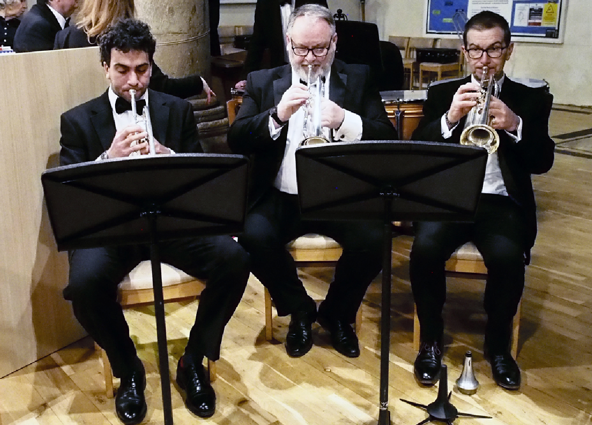
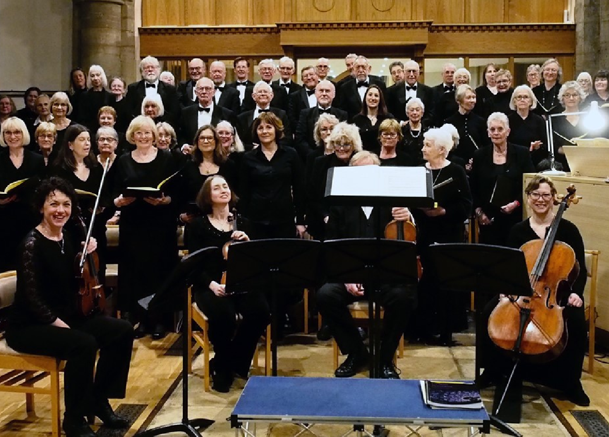
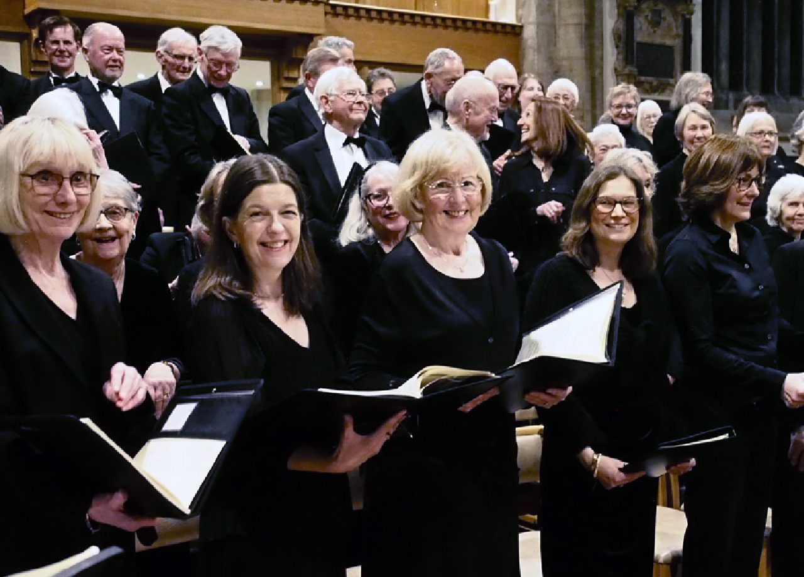
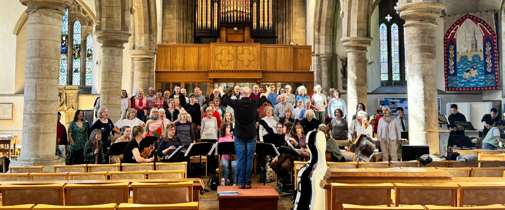
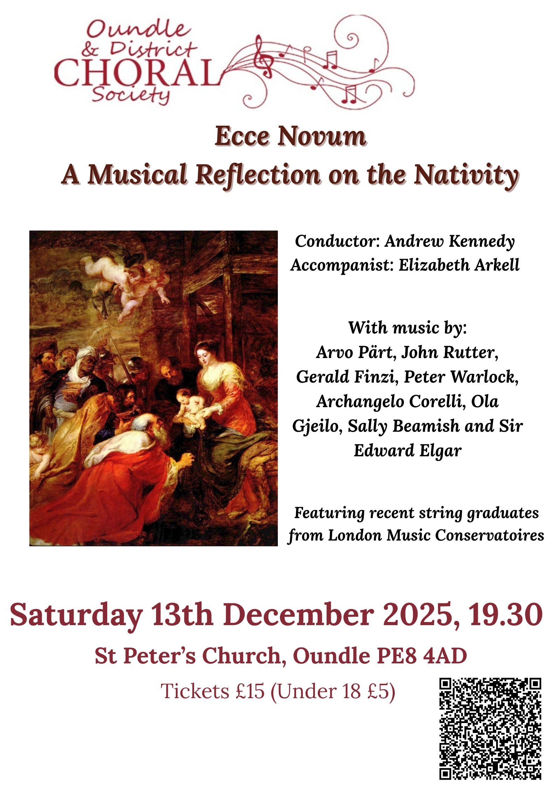
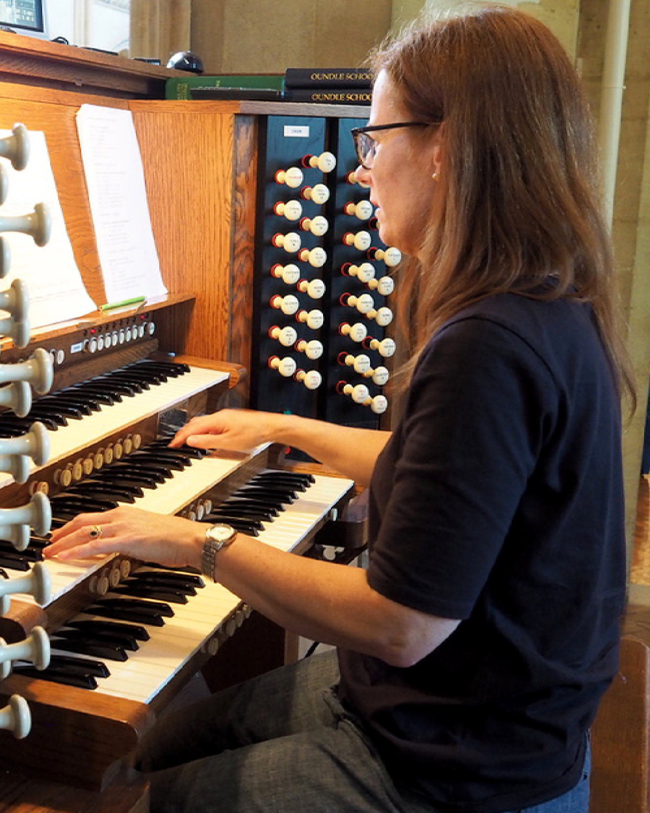

We are a mixed voice choir who have been in existence for over 100 years. We draw our membership from a fairly wide rural area and currently have approximately seventy voices who meet for rehearsals every Monday during term time.
Although we are an independent choral society, we have close links with Oundle School with whom we often perform and who regularly support our concerts. Our rehearsals are held in Laxton Junior School Hall, East Road, Oundle, PE8 4BX, from 7.30pm until 9.30pm.
There is no requirement to audition and all singers are made welcome no matter what skill level you have. We are grateful to Oundle Town Council for their continuing financial support but, much like most societies, we are a registered charity and are obliged to charge a subscription fee. However, don’t let that stop you from coming along to see if you like us!
If you are interested in joining our society please contact us for more information by telephoning/emailing using the details below.
Registered charity number: 1098947








Chair : Tessa Leuchars
Treasurer: Lynne Pritchard
Secretary: Clare Jones and Janet Ollerenshaw
Publicity and Website: Tessa Leuchars and Claire Weston

“It is such a privilege for us to have Andrew Kennedy as our Musical Director, Conductor and Vocal Coach. What other choral society can boast that they have a former award winner of BBC Cardiff Singer of the World at the helm?” - Jeremy
“ODCS is the most friendly, relaxed and enjoyable choral society I have ever belonged to.” - Trisha
“I love the challenge of learning a new piece from scratch. Over the weeks, we gain confidence and learn to blend our voices and add depth and emotion to the notes on the score. Then when it all comes together in a concert performance and we bring joy to an audience, there are few greater highs in life!” - Clare
“ Singing is the perfect form of exercise and relaxation, focussing your mind, whatever the day has thrown at you!” - Tessa
“Singing with ODCS provides an exhilarating combination of pleasure and professionalism no matter what level of experience one has. It combines learning new skills and scores with physical and mental health and provides enjoyment, social interaction and hours of fun!” - Janet
“Like many choirs, Oundle and District Choral Society has a slight imbalance when it comes to male singers in the tenor and bass sections. So earlier this year, when the plea went out asking whether any altos might consider defecting to the tenor line, I thought, “Why not?” Having sung tenor in a previous choir, I volunteered… and so, an ODCS “talto” was born. I’m delighted I made the switch. The gentlemen have been wonderfully welcoming, and the tenor range suits my voice far better than the slightly higher alto line. Besides, if everyone is singing all the right notes in all the right places, and not like Eric Morecambe, who famously played ‘all the right notes, but not necessarily in the right order’ — nobody seems to mind too much who is singing them! Of course, we’d still love more gentlemen to join the choir and bolster the tenor and bass sections… but equally, if any altos are feeling adventurous, I can highly recommend coming over to the dark side. We may be short on numbers, but we make up for it in enthusiasm, questionable jokes, and excellent harmonies.” - Jennifer
Spring 2026 – Four Coronation anthems, Handel, and Dido and Aeneas, Purcell
December 2025 Ecce Novum, a musical reflection on the nativity, various works.
Summer 2025 – The Creation, Haydn
Spring 2025 – Requiem, Mozart
December 2024 – A French choral Christmas concert, Charpentier and Saint-Saëns
Summer 2024 – The Messiah, Handel
Spring 2024 – The Creation, Haydn
December 2023 – A French choral Christmas concert, Charpentier and Saint-Saëns
Summer 2023 – The Messiah, Handel
Spring 2023 – Requiem, Mozart
December 2022 – A French choral Christmas concert, Charpentier and Saint-Saëns
Summer 2022 – The Creation, Haydn
Spring 2022 – Requiem, Mozart
December 2021 – A French choral Christmas concert, Charpentier and Saint-Saëns
Summer 2021 – The Messiah, Handel
Spring 2021 – Requiem, Mozart